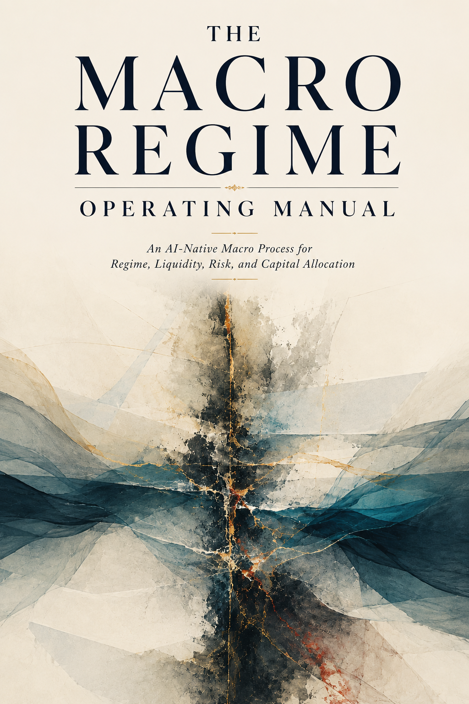

Macro Process
The Macro Regime Operating Manual
An AI-native macro process for regime, liquidity, risk, and capital allocation. Built for reading rates, inflation, credit, volatility, dollar pressure, and cross-asset behavior as one operating map.